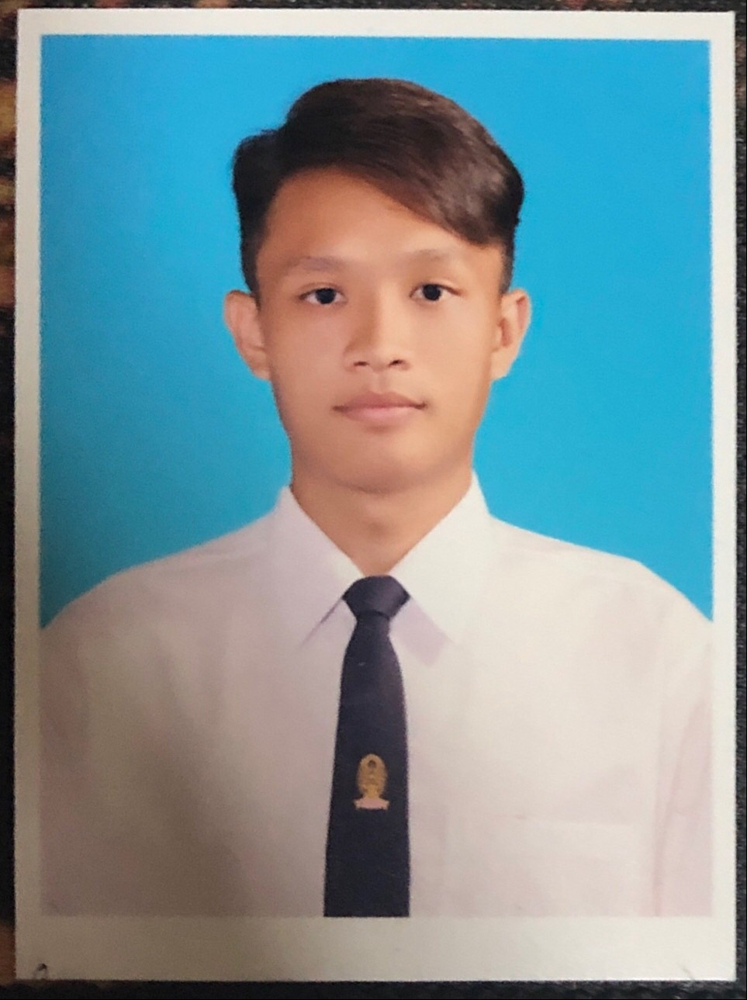

Krittasil Punyarum
(Beam)

In pursuit of a challenging
opportunit y , I aspire to align
my experience and acquired
skills with the organization' s
growth. Over a year, I have
consistently demonstrated a
strong determination to
fulfill as s igned
respons ibilities. I eagerly
anticipate the chance to
contribute my utmost to an
organization and deliver
exceptional outcomes .
Education
Work Experience
-
WASTEWATER MANAGEMENT AUTHORITY (W.M.A)
(ENVIRONMENTAL ENGINEERING)
MAY 2021 - JUL 2021 (INTERNSHIP)
- Design wastewater treatment plant for Prananhklao hospital
-
TOP RICH CORPORATION CO.,LTD.
(ENVIRONMENTAL ENGINEERING)
MAR 2022 - JULY 2022
-
with the professional team to design and install
water treatment plant for many industries such as food
industry, pharmaceutical industry, drinking water etc.
-
MUANGTHAI CAPITAL PUBLIC COMPANY (LIMITED)
(SUSTAINABILITY ENGINEERING)
NOV 2022 - NOV 2023
- Conduct a comprehensive data collection and analysis
pertaining to the sustainability of the organization.
- Gather data required for assessments, including data for
CDP ratings, THSI ratings, and S&P Global ratings.
- Initiate sustainability projects.
- Prepare a 2022 MTC sustainability report.
Skills
- Data analytics
- Intermediate Excel
- Global Sustainability Assessment
- Entry level Programming [html css JS]
- Coordination & Working in team
- Intermediate Presentation in EN
Certification & Awards
- License for Professional
Practice (Env ironment)
- TOEIC 785/990 point (2021)